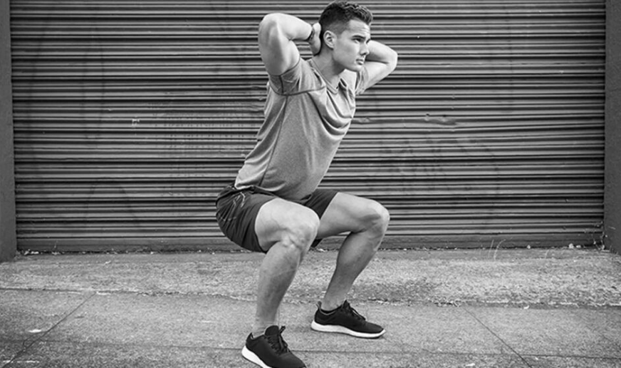

El primer y más importante componente para mantener la salud es la nutrición. Muchas personas intentan atrapar todo y, por lo tanto, no hay tiempo para preparar una buena comida. Por lo tanto, al pasar por estantes con productos semiacabados, las personas están literalmente "empacadas" con estos productos. Esta es una solución rápida para cocinar, sin embargo, nadie piensa en el daño que trae esa comida. Es solo unas pocas veces usar el producto semiacabado y puede estropear fácilmente el estómago.
Los productos naturales sin impurezas químicas nunca dañarán el cuerpo. Muchas verduras y frutas son sustitutos naturales de las vitaminas y minerales que nuestro cuerpo necesita a diario. Debe desayunar. Los alimentos que se toman por la mañana proporcionan energía para el resto del día. Si no desayunas, aumenta el riesgo de obesidad y tu metabolismo se ralentiza. Pero debe mantener un equilibrio de grasas, proteínas y carbohidratos. Mantener el equilibrio ácido-base en el cuerpo es un factor importante para mantener un ambiente saludable. Entonces el cuerpo no tendrá miedo de las bacterias y los virus.
La ecología del medio ambiente también tiene un efecto importante en la salud. El uso de varios productos químicos durante la limpieza, las emisiones de sustancias nocivas envenenan el sistema respiratorio humano. Para la prevención, es importante viajar al mar o al campo, donde hay aire limpio y lleno de yodo.
Es necesario recordar sobre el uso obligatorio del agua, que es útil para el estómago. El agua afecta los dientes, los huesos y el estado general. Mantener la salud es mucho más fácil que restaurarla. Para hacer esto, algunas personas necesitan enfermarse para asegurarse de lo importante que es seguir las reglas de un estilo de vida saludable.
